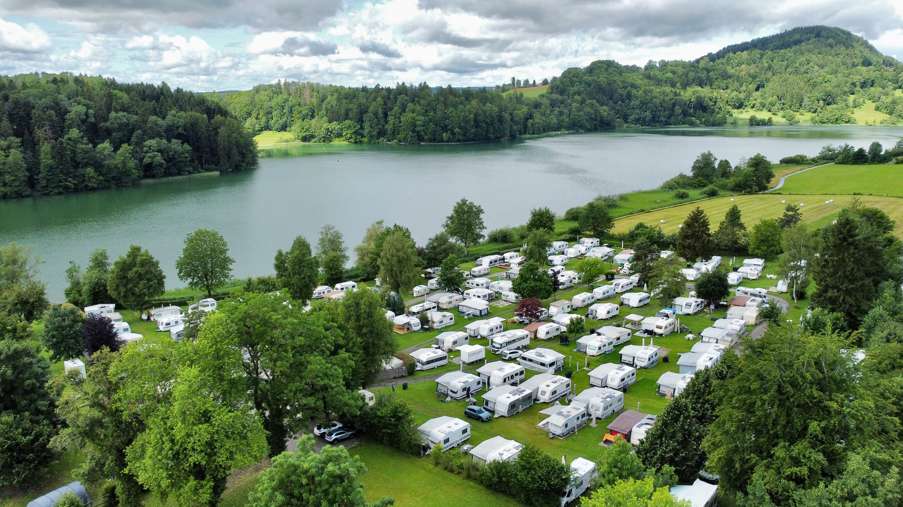

Verein
In unserem Verein treffen sich Gleichgesinnte, um sich auszutauschen und die Freundschaft zu pflegen.
Mehr erfahren über den VereinCampen im schönen
Zürcher Säuliamt

In unserem Verein treffen sich Gleichgesinnte, um sich auszutauschen und die Freundschaft zu pflegen.
Mehr erfahren über den VereinAlle Aktivitäten rund um den Verein und den Türlersee findet ihr auf dieser Seite.
Mehr erfahren über die AktivitätenLinks und sonst noch Spannendes rund um den Türlersee und den Camping.
Mehr erfahren über den TürlerseeZweck des Vereins
Unser Ziel ist es, möglichst alle Saison-Camperinnen und Camper in unserem Verein zu haben um so den Zusammenhalt und die Freundschaft zu pflegen.